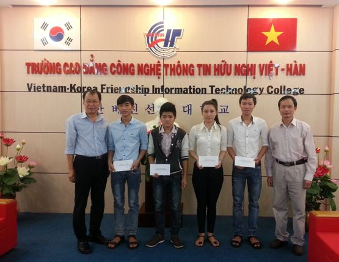

Tình nguyện viên giáo sư Kim Jang Woon là chuyên gia hợp tác Hữu nghị của KOICA - Hàn Quốc đã đến và làm việc tại Trường cao đẳng CNTT Hữu nghị Việt – Hàn trong thời gian từ 18/12/2013 đến 17/12/2014.
Việc trao học bổng là hoạt động thường niên của Tình nguyện viên Hàn Quốc trong quá trình làm việc tại Trường cao đẳng CNTT Hữu nghị Việt – Hàn và giáo sư Kim Jang Woon trong thời gian công tác ở Trường mỗi học kỳ đều có những suất học bổng trao tặng cho sinh viên. Đây là việc làm có ý nghĩa sâu sắc đối với các em sinh viên có hoàn cảnh khó khăn nói riêng và đối với sinh viên toàn trường nói chung.
